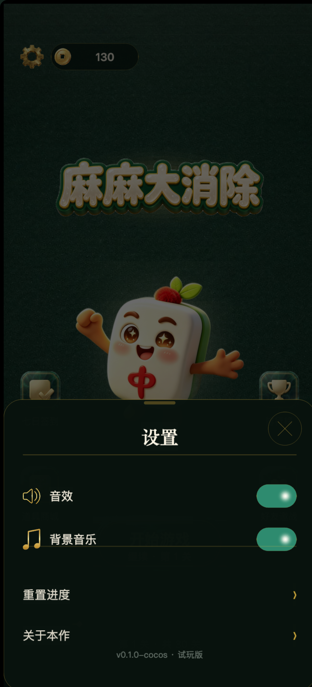
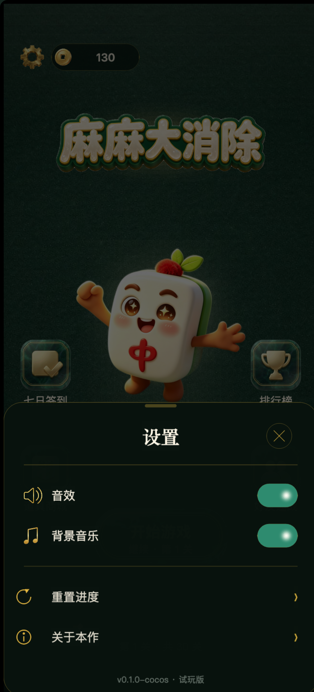
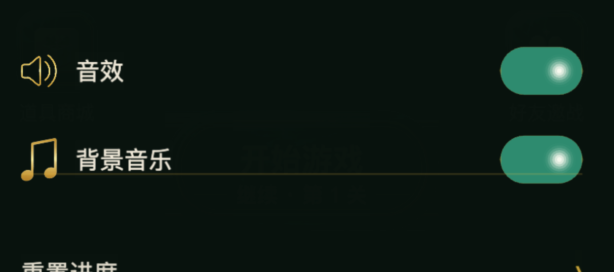
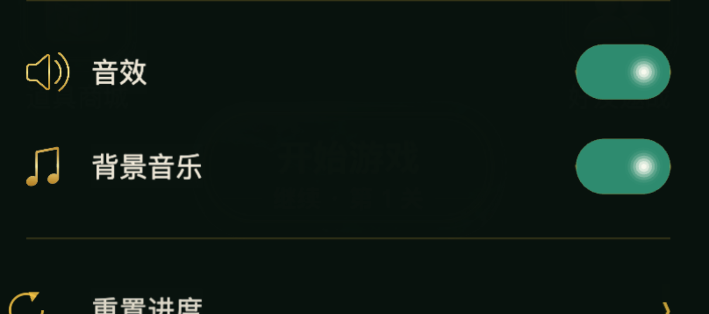
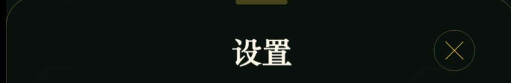
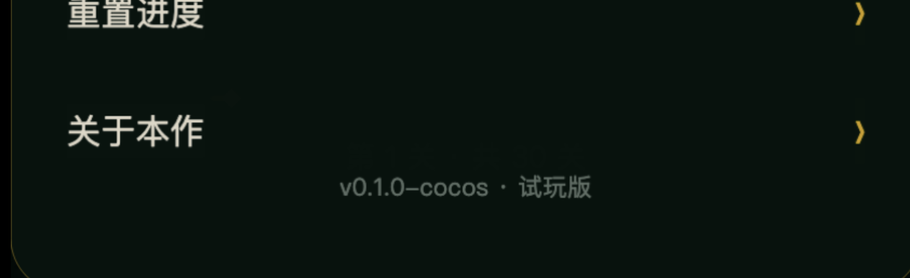
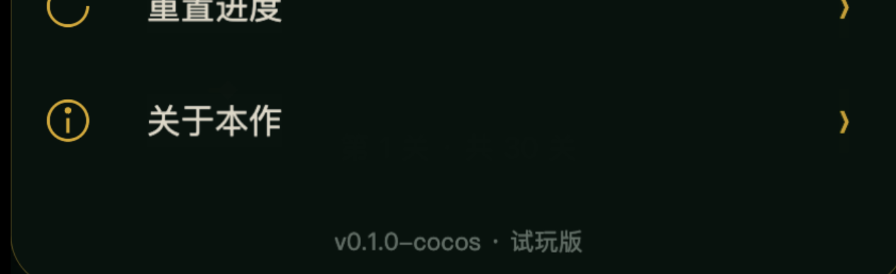

同视口取证：421×927 @3（= 真机 1264×2780）。改前 / 改后走
git stash 切换，没有手改源码造状态；恢复后三个源文件 md5 与改后
逐字节一致。
228×280 强制拉成
320×140 ⇒ 横向 ×1.403 / 纵向 ×0.500，各向异性 2.81×，
玉纹被压成横向拉丝。Shade：两侧各 80 宽的
rgba(2,24,13,0.34) 硬压暗带（用来盖接缝），中央
rgba(255,255,255,0.10) 竖向渐变 —— 这就是"中间发亮"的直因。aspectH:140 定高等比，
中段宽 = 320 − 56.94 − 55.23 = 207.83；Shade 整层删除。make_btn_primary_assets.py 从 btn_v2.png
先整图缩 70%、再按实测切点 190/706 裁三段。切点取"两侧列高完全相同"处，
消掉 1px 接缝台阶（1 源 px ≈ 真机 0.72 物理 px，不可见）。| 项 | 改前（btn9 拼法） | 改后（方案 B） |
|---|---|---|
| 中段源 → 显示 | 228×280 → 320×140 | 361×327 → 207.8×140 |
| 横向缩放 | ×1.403 | ×1.345（只在中段） |
| 纵向缩放 | ×0.500 | ×0.428（三段同一比例） |
| 各向异性（横向÷纵向） | 2.81× | 1.00×（帽）/ 1.345×（中段） |
| 两端帽与中段的关系 | 帽压在中段之上（重叠 78/75 宽） | 三段各占其位、零重叠 |
| 叠加的高光/压暗层 | 两侧各 80 宽压暗带 + 中央白 10% + 底部压暗 | 整层删除（素材自带明暗） |
| 素材体积 | 155 KB | 308 KB（缩 70% 后） |
rule(352) 落在「背景音乐」行（284~388）内部，
看起来像这行的下划线 —— 就是你红圈圈的那一处。






| 项 | 改前 | 改后 |
|---|---|---|
| 第二条分隔线位置 | rule(352) — 落在「背景音乐」行内部（该行 284~388） | 落在两组空隙中央（距行边各 24） |
| 四行左边缘 | 三档不齐：图标 46 / 文字 110 / 链接文字 46 | 严格同一骨架：图标列 48 → 间隙 22 → 文字 |
| 行高 | 104 / 104 / 98 / 98（两档） | 96 × 4（统一） |
| 图标视觉高 | 喇叭 38.2 / 音符 50.3（定宽 42 导致） | 均为 40（改定高） |
| 关闭按钮 vs 标题中线 | 70 vs 88（差 18） | 80 vs 80（同心） |
| 关闭按钮右边距 | 30（比行的边距 46 还靠外） | 48（与内容右缘对齐） |
| 版本号 vs「关于本作」 | 行 518~616 / 版本 600~626 ⇒ 重叠 16 | 行 512~608 / 版本 648~674 ⇒ 中心距 101 > 行距 96 |
| 抽屉竖向留白 | 顶部 4 / 底部 74（版心偏上） | 顶部 24 节奏 / 底部 26 |
| 链接行图标 | 无（所以左边缘对不齐） | 金色线描（重置↺ / 信息 i） |
tsc-check.sh → 0 错误g5-smoke.mjs → 25 / 25 通过（复跑 2 次均为
「未捕获异常 0 · console error 0」；首跑出现过 1 条
ERR_CONNECTION_RESET 的本地服务器偶发断连，复跑不复现）BtnStart 320×140 ·
Mid 208×140 · CapL 57×140 · CapR 55×140，
无非页面节点越界btn_left/mid/right 已从工程删除（备份
/private/tmp/g5-btn9-bak）；新素材自动生成 .meta 并进包AudioService.setMuted()，所以关掉「背景音乐」会把「音效」一起关掉。
这是功能问题、不是排版问题，我没擅自改（要改得给
AudioService 加独立的 bgm / sfx 开关）。要不要修？v0.1.0-cocos · 试玩版 与「关于本作」的 toast
《叠塔消消》· 试玩版 里的游戏名仍是「叠塔消消」，
而美术标题是「麻麻大消除」—— 这个悬了很久，要不要一并统一？